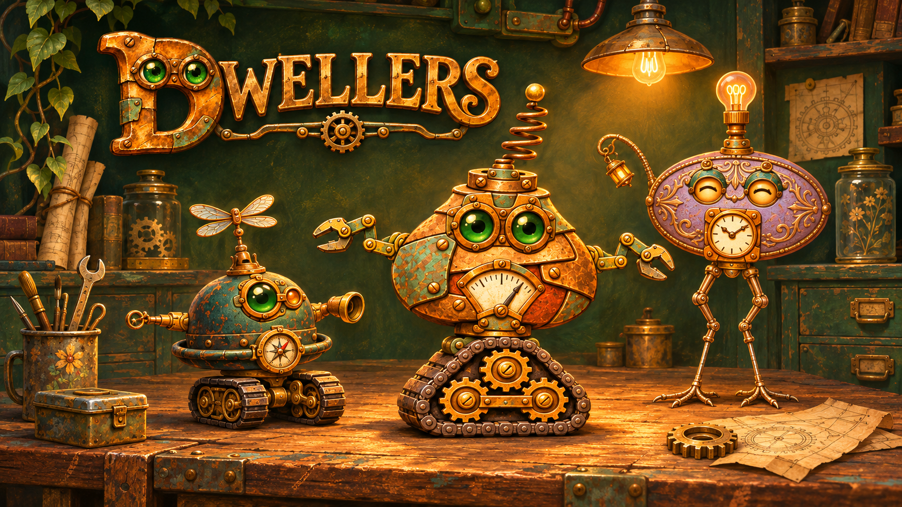
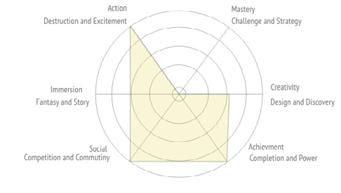
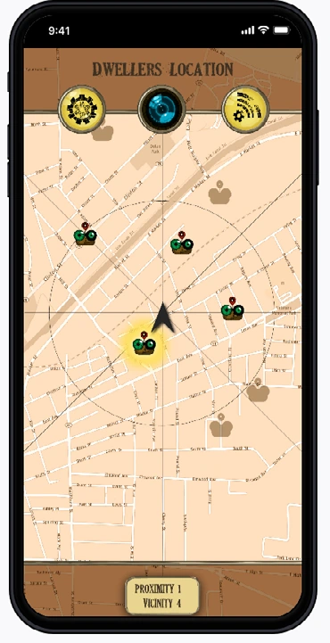
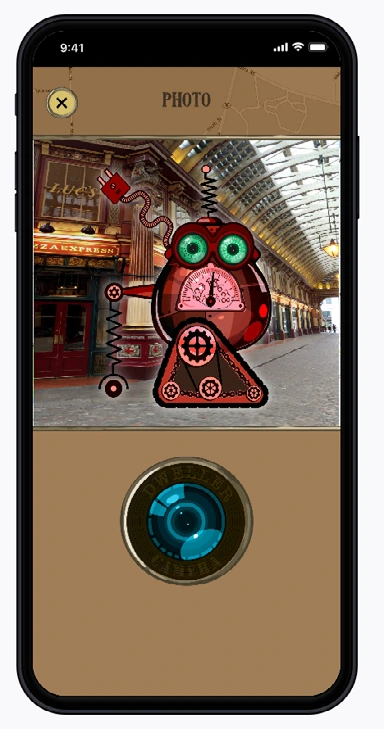
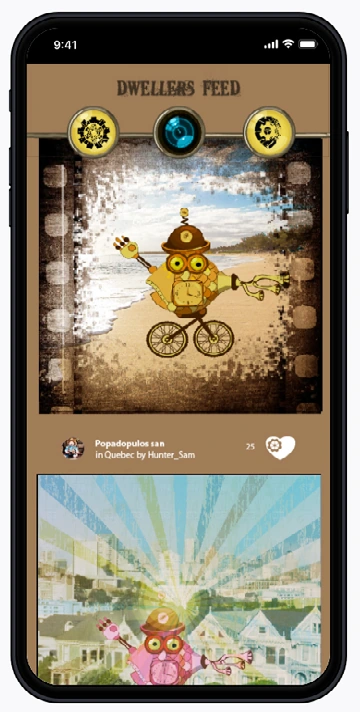

Creator
A spring for an antenna? Claws for hands? Assemble your own curious little machine, then release it into the world for someone else to discover.
For makers who love design, building games and steampunk.

Little machines. A world to explore.
A social AR game for curious explorers and playful makers. Build a steampunk creature, set it free, and find the ones hiding around you.
My work: game concept, UX and visual design.
Play the prototype
Make something. Find something. Fall in love with someone else’s creation.
A spring for an antenna? Claws for hands? Assemble your own curious little machine, then release it into the world for someone else to discover.
For makers who love design, building games and steampunk.
There’s a Dweller around the corner. Follow the map, meet it through your AR camera, and bring back a photograph worth sharing.
For explorers who love photography, travel and AR games.

Stay for the strange creatures and the places they turn up. Browse the photographs, leave a comment, and cheer on your favorites.
For people who love animation, travel photos and the steampunk world.

I love the beauty of old things: objects with weight, history, and a little wear. Steampunk brings that feeling into a digital world.
Gears, glass eyes, battered brass. Each part suggests a personality. Building a Dweller becomes a small creative project; sharing it gives people something to do together.

One shared world, four simple rules.
Build a Dweller and place it at a real-world location.

Walk nearby. Dwellers in your area appear on the map.

Use the AR camera to photograph a Dweller and share it on your feed.

Follow discoveries, leave comments, and like other players’ photographs.

Original mobile designs. The browser prototype simulates the map and camera; current workshop artwork is AI-assisted.
Play the prototype